“Make the lead vocal sit on top: bright, no harsh S's, a little room.”
Claude Puts Hush De-Ess on the vocal, lifts the high shelf on Prism EQ, raises the fader 1.5 dB, sends 15 dB under to the reverb bus, then reads the meters back to you.
The complete studio for Mac and Windows — record, produce, mix and master — with Claude connected to every track, plug-in, fader and export. Tell it what you hear in your head, in plain words. Claude does the work in your session while you watch.
Perpetual licence · no subscription · keys work offline · VST3 & Audio Unit hosting
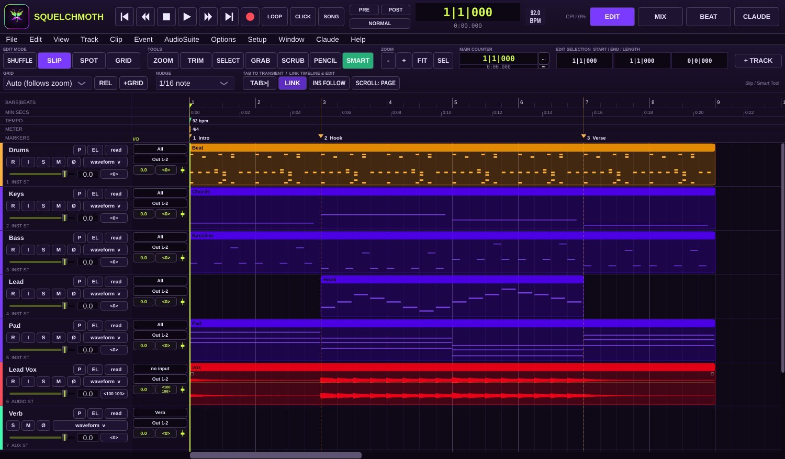
Squelchmoth was built to be run by Claude. Connect it once and Claude reaches 143 tools and every menu command: tracks, clips, MIDI, every plug-in parameter in its own units, sends, automation, the mastering window and every export. You describe the sound. Claude makes the moves, checks the meters and tells you what it changed. Every action lands in the log, and Undo takes back anything you don't like.
“Make the lead vocal sit on top: bright, no harsh S's, a little room.”
Claude Puts Hush De-Ess on the vocal, lifts the high shelf on Prism EQ, raises the fader 1.5 dB, sends 15 dB under to the reverb bus, then reads the meters back to you.
“Glue the drums and make the kick punch through the 808.”
Claude Adds Pupa Buss Comp to the drums, Snap Transient on the kick and a cut on the 808 where the kick lives, then compares the levels before and after.
“Tune the hook to A minor and keep it natural.”
Claude Opens Moth Tune on the vocal, sets A minor, slows the retune and keeps the vibrato.
Needs Vocal Suite“Give me a 140 BPM drill beat with sliding 808s.”
Claude Sets the tempo, rolls a drill pattern in Beat Lab and writes an 808 line with glides in the piano roll.
“Sweep a filter into the drop at bar 17.”
Claude Inserts Veil Filter on the music bus and draws cutoff automation from bar 13 to bar 17.
“Master the EP for streaming: −14 LUFS, −1 dB true peak.”
Claude Builds the album in the Mastering window, sets the limiter target, measures every song and exports tagged release files.
Needs Mastering Suite“Bounce stems for my mix engineer.”
Claude Exports one file per track, same length and start, named after the tracks.
“Is anything clipping? Show me the mixer.”
Claude Analyses the mix, names the tracks that peak too hot and sends you a screenshot of the Mix window.
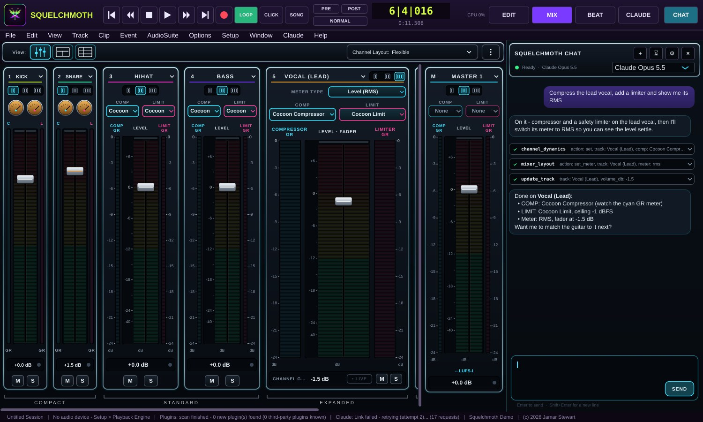
Learn the program and make real songs: 16 tracks, 28 basic instruments and effects, five sound kits, save and bounce your mix.
Download the DemoThe full program: unlimited tracks, 60 Signature instruments and effects, the 186-effect AirWindows collection, 17 kits, Mastering, Cut Lab, stems and DDP.
Buy $189.99Squelchmoth and all six add-on packs: every one of the 123 Signature plug-ins, all 27 kits and 51 loops.
Buy $399.99143 tools plus every menu command. Mix, edit, write parts, master and export by conversation.
A full recording and editing workflow, a beat-making rack, a mixing console and an album mastering page. No hopping between programs.
Instruments and effects with their own interfaces and factory presets, plus 186 AirWindows effects underneath.
Squelchmoth's own drum engine renders every kit. Start a beat in seconds or build from scratch.
$189.99 for a perpetual licence on two computers. Keys work offline and updates within version 1 are free.
VST3 hosting on Mac and Windows, plus Audio Units on Mac, scanned safely in a separate process. A crashing plug-in gets switched off, and your session reopens.
macOS 11 Big Sur and newer, native on Intel and Apple Silicon, plus 64-bit Windows 10 and 11. One key works on both.
An automated self-test drives the whole app through Claude's tools on every build: more than 1,300 checks, from tuning and preset levels to bounces.
Shuffle, Slip, Spot and Grid. Zoomer, Trim, Selector, Grabber, Scrubber, Pencil and the Smart Tool. Playlists, elastic time and pitch, rendered clip effects, memory locations, folders, VCAs and groups — with the shortcuts your hands expect.
Every channel carries a COMP and a LIMIT slot with real gain-reduction meters, a segmented LED level meter under a chrome fader, and a live-signal light. Set each strip Compact, Standard or Expanded, meter in Peak, RMS or LUFS, and save mixer layouts with the session. Full view adds ten inserts, ten sends, I/O and pan to every strip. Select several channels and one fader moves them all.
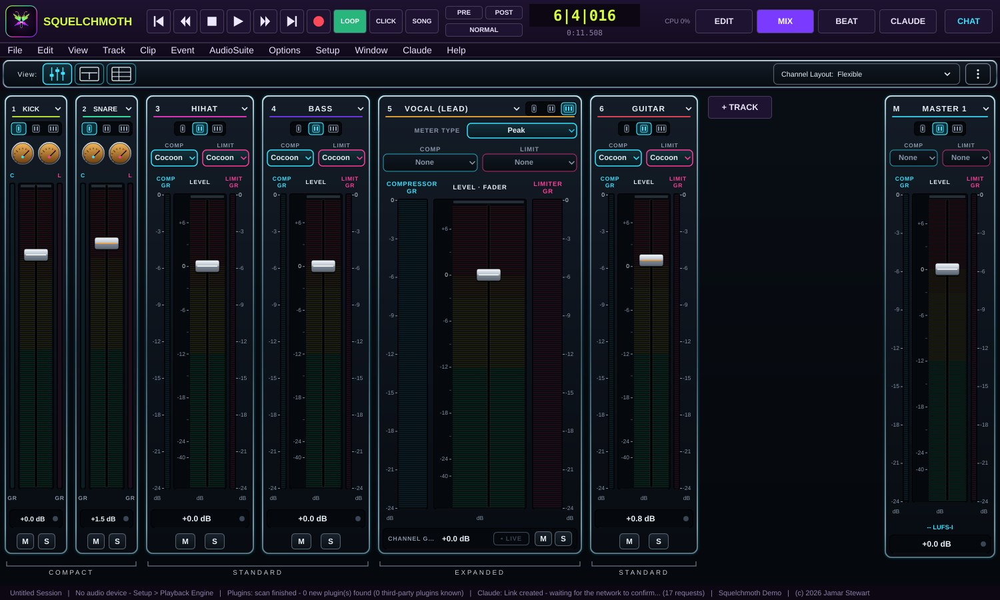
A channel rack and step sequencer, 64-pad sampler, slicers, a piano roll that plays as you draw, chord tools and scale snapping. Describe the groove to Claude and it lands on the grid.
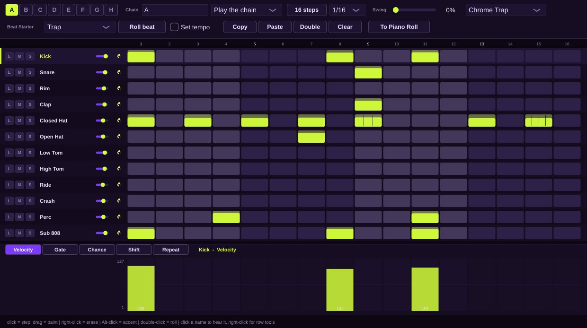
Tune live under 1 ms or note by note in the graph. Stack a four-voice choir of up to 32 singers per voice, double with vibrato only where the singer holds a straight note, vocode on 64 bands with a built-in tuner, talk through a guitar, and clean hum, noise, room and clicks with one knob. Every vocal plug-in hears the same pitch tracker, and Claude can run all of it.
Ten-model saturation oversampled to 16x with a live harmonic readout, a 35-style echo, steel and gold plates, a crushing limiter, a broadcast-console EQ, granular pitch-delay, tap-cloud reverb and an eight-slot effects rack with 200 ready chains. Over 3,300 new presets, each leaving your sound at the level it came in.
Sequence songs, process each one and the whole record, meter with EBU R128 loudness, true peak and phase, then publish streaming-ready WAV, FLAC or MP3 files, a WAV + CUE image or a DDP fileset for the plant.
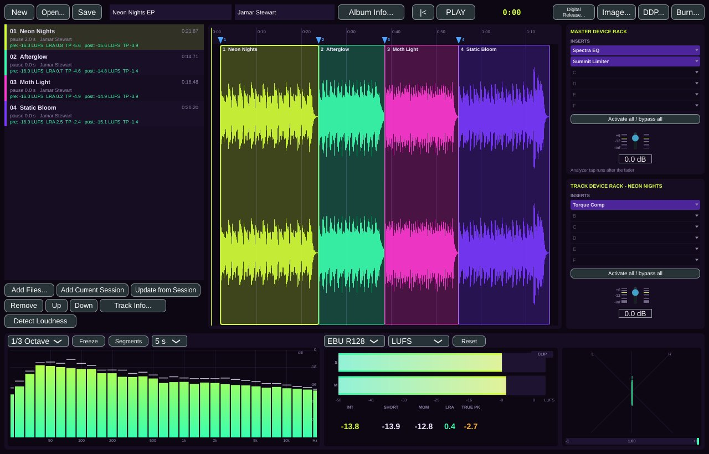
Every Signature plug-in has its own interface, a live display, Basic and Advanced factory preset banks, A/B compare and user presets. The AirWindows collection waits underneath for the deep end. Your own VST3 and Audio Unit plug-ins load alongside.
The flagship analogue-style synth: 3 anti-aliased oscillators with sync / ring / FM, sub, noise, dual filters, 3 envelopes, 2 LFOs, 8-slot mod matrix, unison, FX
Modern subtractive lead and bass synth: morphing oscillators, two filters in series or parallel, trance gate, drive, mod matrix, 4 macros, chorus / delay / reverb
The pad sampler: 64 pads in 4 banks, 8 layers per pad (velocity / round-robin / random / crossfade), choke groups, per-pad tune / envelope / filter, the 27 kits in one click, slice a loop to pads
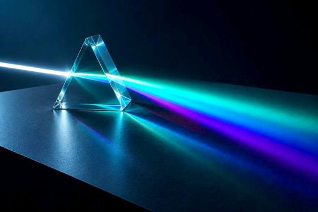
Four-band parametric with low/high shelves — clean, musical, zero-latency
Versatile feed-forward compressor/limiter with sidechain — the everyday squeeze
The famous one-knob 'pressure' compressor: speed, mewl, output — glue that breathes
Full tape machine model: head bump, flutter, softness, bias — the Squelchmoth 'warm' button
Eight-line FDN reverb: eight room types, early reflections, three-band decay, modulation, ducking, freeze and width
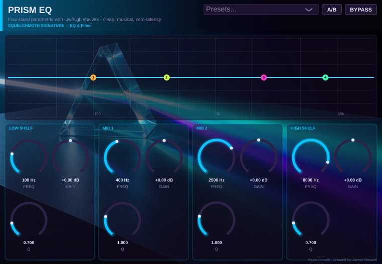
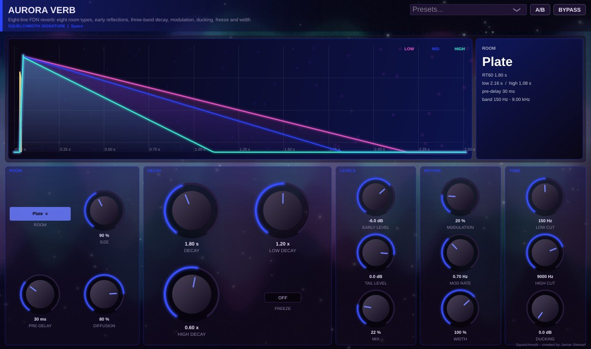
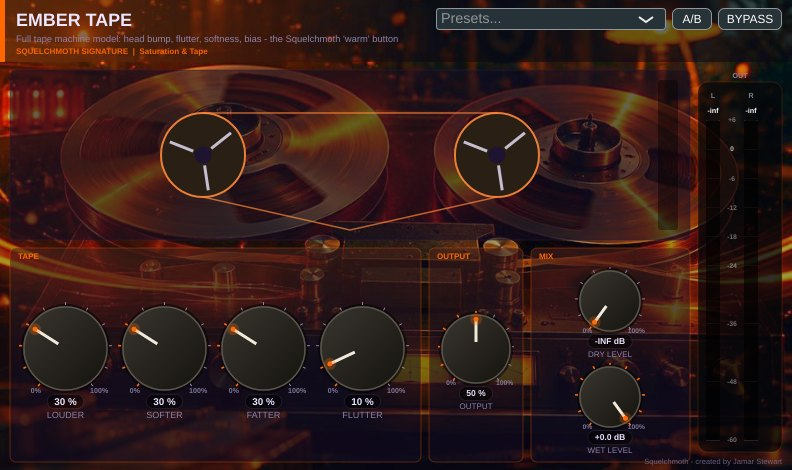
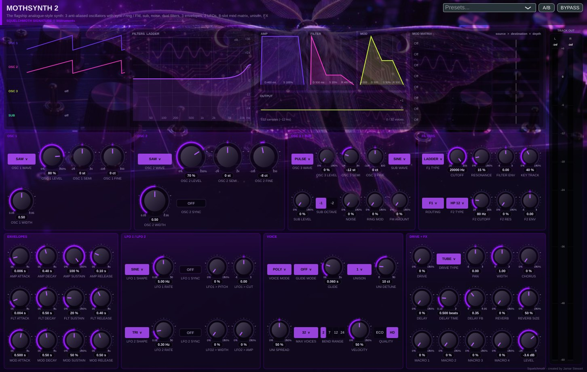
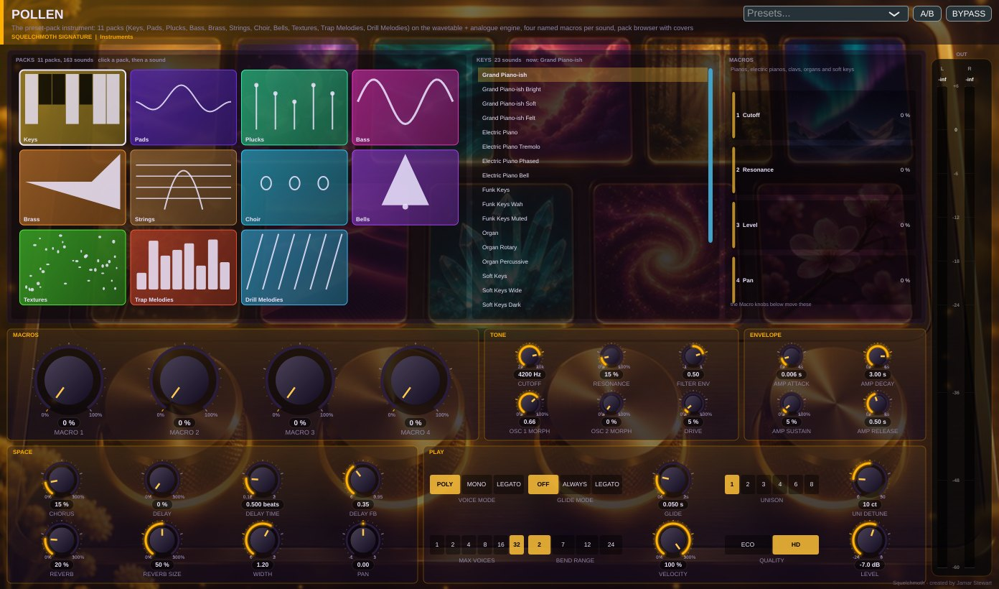
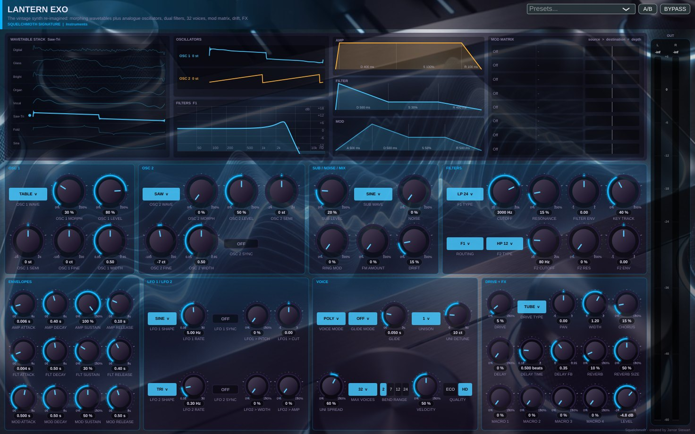
The big studios are excellent. Squelchmoth is the one you can mix by talking to it, with beat-making and album mastering in the same app, for one payment.
| Squelchmoth | Pro Tools | Logic Pro | FL Studio | Ableton Live 12 | Fender Studio Pro | |
|---|---|---|---|---|---|---|
| Price | $189.99 once · free Demo | Subscription, or $199 (Artist) / $599 (Studio) perpetual | $199.99 once, or $12.99/mo Creator Studio | From $99 · Producer $199 · lifetime free updates | Intro $99 · Standard $349 · Suite $749 | $199.99 once, or $19.99/mo |
| Platforms | Mac (macOS 11+) and Windows 10/11 · one key for both | Mac and Windows | Mac (macOS 15.6+) and iPad | Mac and Windows | Mac and Windows | Mac, Windows and Linux |
| AI that operates your session from a chat | Claude: tracks, MIDI, every plug-in parameter, automation, mastering and bounces | No chat control (AI transcription and chord symbols) | No chat control (Session Players write parts; Mastering Assistant) | Gopher: mixer levels, routing, plug-in parameters and drum patterns; no automation in published tests | None built in (the Claude connector answers manual questions only) | Studio Assistant answers questions |
| Album mastering page with DDP export | Yes | Not in feature list | Mastering Assistant per song; DDP not listed | Not in feature list | Not in feature list | Yes |
| Built-in beat-making rack, album mastering and AI control in one app | Yes | — | — | — | — | — |
Competitor details from vendor pages, major US retailers and published reviews, checked November 6 2026. Prices are in US dollars before tax and change often. Pro Tools, Logic Pro, FL Studio, Ableton Live and Fender Studio Pro are trademarks of their owners. Squelchmoth is independent and not affiliated with them.
Add-ons work in every edition — even the free Demo. Buy one, enter its key, and its plug-ins unlock in place with your settings intact.
Yes. No time limit and no watermark. It has the basics — 16 tracks, 28 instruments and effects, five kits — and you can save sessions and bounce your mix. When you need more, enter a key and the same app unlocks; nothing to reinstall.
No. Squelchmoth and every pack are one-time purchases with a perpetual licence. Updates within the same major version are free.
Yes. Squelchmoth hosts VST3 and Audio Unit plug-ins, scans them safely in a separate process, and sorts them into categories with a search box in every plug-in menu.
Checkout is handled by Payhip. Your key and download link arrive by email straight away. Paste the key into Help › Licences and Upgrades — it works offline.